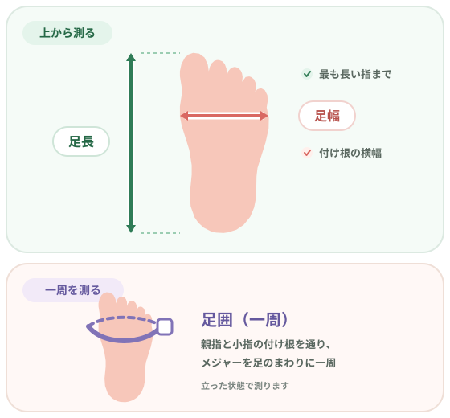
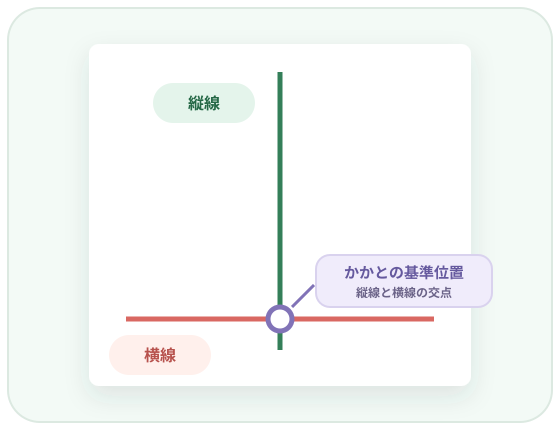
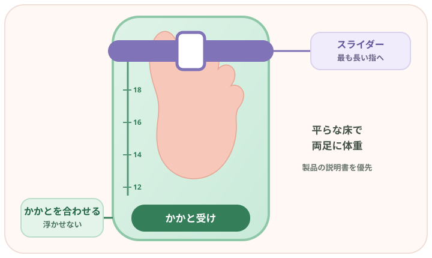

子どもの靴選びで確認したい3つ
| 測るもの | 意味 |
|---|---|
| 足長 | 立った状態で、かかとの後端から最も長い指先までの長さ |
| 足幅 | 親指と小指の付け根付近にある、骨の張り出した部分の横方向の幅 |
| 足囲 | 親指と小指の付け根付近にある、骨の張り出した部分を通って一周した長さ |
日本皮革産業連合会の用語説明では、JIS S 5037に基づき、靴のサイズを足長と足囲、または足長と足幅で表します。[1]

子どもの足サイズを測るときに用意するもの
測り方によって、用意するものが変わります。
紙と定規で測る場合
- 子どもの足全体が載る紙
- 鉛筆またはペン
- 30cm程度の定規
- 足囲を測るメジャー
- 厚めの本または箱
- 三角定規
- 紙を固定するテープ
フットメジャーを使う場合
- 子どもの足が測定範囲に入るフットメジャー
- 足囲も測る場合はメジャー
印刷式スケールを使う場合
- メーカー公式の計測シート
- A4対応プリンター
- 印刷した目盛りを確認する定規
- 公式手順で指定された本や筆記具など
ムーンスターの自宅計測方法では、紙、筆記具、厚い本・箱、三角定規、定規、メジャー、テープを使用します。三角定規は、直角を保ったまま指先の位置を紙へ移すときに便利です。[2]
市販のフットメジャーは測定範囲や目盛り、可動部の形が異なります。購入前に、今の足だけでなく今後使いたいサイズまで測定範囲に入るか、取扱説明書が付いているかを確認してください。たとえばヒラキ公式のキッズフットメジャーは5.5〜19cm対応で、メジャーと取扱説明書が付属します。これは市販品の一例であり、すべての製品が同じ仕様という意味ではありません。[9]
印刷時に「用紙へ合わせる」「ページに合わせる」を選ぶと、目盛りが縮小・拡大される場合があります。必ず公式ページの指定倍率で印刷し、使う前に手持ちの定規で確認しましょう。[3][4]
フットメジャーがあると自宅で足長を測りやすい
紙と定規でも測れますが、数か月ごとに繰り返し確認する家庭では、フットメジャーを使うと毎回基準線を引く手間を減らせます。一般的なスライダー式なら、かかとを基準位置に合わせ、最も長い指先へスライダーを合わせて足長を読みます。
ただし、フットメジャーの数値だけで、購入する靴サイズを決めないでください。 フットメジャーで主に確認できるのは足長です。靴のフィットには、足幅・足囲、甲の高さ、つま先の形、メーカーのサイズ設計、靴のデザインも関係します。[5][6]
左右をそれぞれ測り、測定日と一緒に記録すると、前回からの変化を見返しやすくなります。
子ども用フットメジャーを探す
毎回紙に基準線を引かずに足長を確認できる選択肢です。特定商品の推薦ではなく、「フットメジャー 子供」の検索結果へ移動します。購入する場合は、子ども用であること、測定範囲、目盛りの読みやすさ、取扱説明書の有無をリンク先で確認してください。
※価格・在庫・仕様はリンク先で最新情報をご確認ください。当サイト内のアフィリエイトリンクを経由して購入された場合、MIYA APPSが紹介料を受け取ることがあります。子どもの足サイズを測る前に知っておきたいこと
立った状態で測る
足に体重がかかった状態で測ります。平らな場所で肩幅程度に立ち、両足へ均等に体重をかけ、腕を自然に下ろして正面を向きます。座ったままや片足を浮かせた状態ではなく、測る側の足にも自然に荷重がかかるようにしましょう。[5]
左右両方を測る
左右の足は同じ長さとは限りません。アシックスは両足を測り、差がある場合は大きい方へ合わせるよう案内しています。IFMEも同じ考え方を示しています。ただし靴を選ぶときは、両足で履き、反対側のかかとが大きく抜けないかも確認します。[5][7]
足元をのぞき込ませない
子どもが目盛りを見ようとして下を向くと、姿勢や体重のかかり方が変わります。IFMEは正面を向いて立つよう案内し、下を向く場合は目線の高さにおもちゃを置く方法を紹介しています。壁の絵や保護者の顔など、正面の目標を見るよう声をかけましょう。[4]
大人が測る
ムーンスターは、自分で測ると正確に測りにくいため、ほかの人に測ってもらうよう案内しています。子どもにはまっすぐ立ってもらい、保護者がかかと、足の向き、定規やメジャーの位置を確認しましょう。[2]
子どもの足サイズを自宅で測る方法【5STEP】
ここでは、ムーンスターの公式計測方法をもとに、紙・定規・メジャーで測る流れを説明します。[2][3]
-
STEP 1
紙に基準線を引く
子どもの足が載る紙を、テープで平らな床へ固定します。紙に縦線を引き、その線と直角に交わる横線を引きます。交点が、かかとを置く基準位置です。
線が斜めに交わると足長を読み違えやすいため、三角定規などで直角を作ります。

縦線と横線を直角に引き、交点へかかとの中心を合わせます。 -
STEP 2
かかとを基準位置に合わせて立つ
かかとの中心を交点に合わせ、足の人差し指（第2趾）の中心が縦線上にくるようにします。厚い本や箱をかかとの後ろへ置く方法では、本を床に対して垂直に保ち、かかとを基準位置へ合わせます。
子どもは正面を向き、両足へ自然に体重をかけます。測る足の指が曲がっていないかも確認してください。
-
STEP 3
足長を測る
三角定規の直角の辺を縦の基準線に沿わせ、最も長い指先へ触れる位置まで動かします。かかとの後端から、その位置までの長さが足長です。
-
STEP 4
足幅・足囲を測る
足幅と足囲は、親指と小指の付け根付近で骨が最も張り出している部分を基準にします。
- 足幅：その2点付近の横方向の幅
- 足囲：その2点を通るようにメジャーを一周させた長さ
メジャーは足の形に沿わせます。強く締め込んだり、大きくたるませたりせず、ねじれがないか確認します。測る位置の考え方は、JIS S 5037に基づく用語説明とアシックスの公式ガイドで確認できます。[1][5]
-
STEP 5
反対側の足も測る
同じ手順で反対側も測り、左右を別々に記録します。
記録例 測定日：2026年8月19日 右足：足長 15.0cm／足囲 ○cm 左足：足長 15.2cm／足囲 ○cm 測定方法：ムーンスター計測シート・裸足測定条件も書いておくと、次回と比較しやすくなります。左右差がある場合は大きい方をサイズ検討の基準にしつつ、靴は両足でフィットを確認してください。[5][7]
フットメジャーを使った測り方
フットメジャーは製品ごとに構造が違うため、次はかかと受けとスライダーがある一般的なタイプの例です。必ず使用する製品の取扱説明書を優先してください。

- STEP 1
フットメジャーにかかとを合わせる
製品を平らで安定した床へ置き、かかとを受け部分へ合わせます。目盛りの測定範囲に足が入っていることを確認します。
- STEP 2
子どもを自然に立たせる
測る足を本体へ置き、反対側の足も床につけます。両足へ自然に体重をかけ、正面を向いて立たせます。
- STEP 3
スライダー等を最も長い指へ合わせる
可動式のスライダーがある製品では、取扱説明書に従って最も長い指先へ合わせます。足指が曲がるほど押すと、本来の「最も長い指先まで」を測れないため、指を押し込まないようにします。
- STEP 4
数値を読む
スライダーが示す目盛りを、目の位置を変えずに読みます。製品によって目盛りの刻み方が異なるため、読み取り位置も説明書で確認してください。
- STEP 5
左右両方を測る
反対側も同じ条件で測り、測定日と左右の数値を記録します。フットメジャーで足長を測った後、必要に応じてメジャーで足囲も測ります。
プリントできる公式計測シートを使う方法
メーカー公式のシートは、基準線や目盛りが用意されているため、白紙から線を引く手間を減らせます。ただし、印刷倍率を誤ると測定値もずれます。
お子さま用足のサイズ計測用紙
ムーンスターは、足長と足囲を測れるA4の計測用紙を公開しています。両足を測ること、ほかの人に測ってもらうこと、印刷した目盛りに誤差がないか手持ちの定規で確認することを案内しています。[3]
ムーンスター公式の計測用紙を見るIFME オリジナルスケール
IFMEは、A4サイズ・100％で印刷するスケールを公開しています。「用紙に合わせる」設定を解除し、印刷後に手持ちの定規で目盛りを確認するよう案内しています。IFMEの手順では、靴下を履いた状態で測ります。[4]
IFME公式の測り方を見る足サイズは裸足で測る？靴下を履く？
測定条件は一律ではありません。
裸足が基本
靴下を履いた状態
アシックスは、一般的な綿の靴下を履くと、裸足より足長・足囲の測定値が増える場合があると説明しています。[5] 同じ子でも条件が違えば数値を単純比較しにくくなるため、使用する計測方法の公式説明に従い、記録に「裸足」「靴下あり」を残すのがおすすめです。
靴を試し履きするときは、その靴を使うときに普段履く靴下で確認します。
子どもの足サイズを測るときによくある失敗
足元をのぞき込んで姿勢が崩れる
目盛りを見ようとして下を向くと、荷重の位置が変わります。子どもには正面を見てもらい、大人が数値を読みます。[4]
片足に体重が偏る
左右へ自然に体重をかけず、片側へ寄った状態では測定条件が変わります。まっすぐ立ち、両足へ均等に体重をかけます。[5]
親指までしか測らない
足長は、かかとから「親指」ではなく「最も長い指先」までです。第2趾などが長い場合は、その指先を基準にします。[1][2]
片足だけ測る
印刷シートを縮小・拡大してしまう
印刷設定でページへ自動調整すると、目盛りも変わる場合があります。指定の用紙サイズと倍率で印刷し、手持ちの定規で確認します。[3][4]
目盛りをそのまま「買う靴サイズ」と考える
足長の数値と靴の表示サイズの関係はメーカーで異なります。自己判断で0.5cmや1cmを足す前に、メーカーのガイドを確認してください。[6][7]
足長15cmなら15.5cmの靴を買えばいい？
すべてのブランドで「足長＋0.5cm」とは決められません。
| メーカー公式の考え方 | 足長15.0cmの例 | 何を確認するか |
|---|---|---|
| アシックス | 足長の実寸に0.5〜1cmを加えた、15.5〜16.0cm表示を検討 | 足囲、つま先の形、甲の高さも見て試し履き |
| IFME | 15.0cm表示を基準にする | 靴内部に約0.5〜0.8cmの捨て寸を設計。中敷きや試し履きで確認 |
アシックスは子ども靴で、足長の実寸に0.5〜1cmを加えたサイズを検討するよう案内しています。[6] 一方、IFMEは足長15.0cmなら15.0cm表示を選び、靴内部の長さは約15.5〜15.8cmになると説明しています。[7]
この違いは、「表示15cm＝靴の内側も一律15cm」ではないことを示します。足長15cmだからといって、全ブランド共通で15.5cmや16cmを選ぶのではありません。
- 1左右の足長・足囲を測る
- 2購入するメーカーと商品のサイズガイドを読む
- 3中敷きや靴内の余裕を確認する
- 4できれば両足で試し履きし、歩いて確認する
この順で判断しましょう。
足長だけ合っていれば大丈夫？
足長が合っていても、足囲や靴型が合わないことがあります。次の点も確認してください。
- 足幅・足囲がきつすぎない、広すぎない
- 甲に強い圧迫がなく、ベルトやひもで適切に留められる
- 最も長い指だけでなく、ほかの指も動かせる
- つま先の形と靴の先の形が合う
- かかとを合わせて歩いたとき、大きく抜けない
- 左右両方で違和感がない
アシックスは、足長・足囲の数値は目安であり、つま先の形や甲の高さでも足入れが変わると案内しています。[6] ムーンスター／ゲンキ・キッズも、かかとを合わせ、つま先、甲を確認し、両足で履いて歩く流れを示しています。[8]
長さは合うのに幅や甲だけが合わない場合、単純にサイズを上げると、かかとや足長の余裕が大きくなりすぎることがあります。サイズだけでなく、足囲や靴型の違う商品も検討してください。
測った足サイズは年齢の目安と比べるべき？
年齢別サイズは大まかな参考にはなりますが、靴選びでは実測したその子の足を優先します。「2歳だから14cm」のように、年齢だけで購入サイズを決めないでください。
年齢ごとの商品カテゴリー例と、平均値との違いは、次の記事で詳しく説明します。
関連記事 子どもの靴サイズは何cm？年齢別の目安と足に合う靴の選び方 年齢ごとの商品カテゴリー例と、平均値との違いを見る →足サイズはどのくらいの頻度で測る？
一度測った数値を長期間そのまま使わず、年齢に応じて定期的に測り直します。ただし、決まった月数で必ず靴を買い替えるという意味ではありません。測定後に足と靴の余裕を確認して判断します。
日本フットケア・足病医学会は、3歳まで3か月ごと、6歳まで4か月ごと、7歳以降6か月ごとをサイズチェックの目安としています。IFMEは3か月に一度、ムーンスター／ゲンキ・キッズは3〜4か月に一度を案内しており、情報源で目安が少し異なります。[7][8][10]
関連記事 子どもの靴はいつサイズアップ？買い替えサインと何か月ごとの測定目安 サイズアップガイドを読む →測った足サイズを記録して「次」を考える
測ったら、左右の足長・足囲、測定日、裸足か靴下ありかを記録しておきましょう。前回と同じ条件で測れば、変化を見返しやすくなります。
サイズ予報は、子どもの成長記録などをもとに、無料版では今の靴サイズの目安、Pro版では次の購入サイズ・時期の目安を確認できる機能を案内しています。2026年8月19日時点ではアプリは公開準備中です。[15]
予報はあくまで目安です。実際に靴を購入するときは、その時点でもう一度両足を測り、メーカーの商品ガイドと実際のフィットを確認してください。 予報だけで購入サイズを確定することはできません。

子どもの足サイズの測り方についてよくある質問
Q. フットメジャーはあった方がいい？
必須ではありません。紙・定規・メジャーでも測れます。自宅で定期的に足長を確認する場合は、毎回基準線を引かずに測れる選択肢です。対応サイズと取扱説明書を確認し、足囲は別に測ります。
Q. フットメジャーで測った数値＝靴のサイズ？
同じとは限りません。フットメジャーが示すのは主に足長です。メーカーによって、表示サイズに捨て寸を含める考え方と、足長に一定の余裕を加えた表示サイズを検討する考え方があります。購入する商品のガイドを確認してください。[6][7]
Q. 子どもの足は裸足で測る？靴下を履く？
測定方法の説明に従います。アシックスの一般的な計測は裸足が基本ですが、IFMEの印刷スケールは靴下を履いた状態を指定しています。記録には測定条件も残しましょう。[4][5]
Q. 足のサイズはどこからどこまで測る？
Q. 親指より人差し指が長い場合は？
Q. 左右の足サイズが違う場合は？
両足を測り、メーカー案内では大きい方を基準にする考え方があります。ただし、最終的には両足で靴を履き、小さい側のかかとが大きく抜けないかも確認してください。[5][7]
Q. 足長15cmなら何cmの靴？
一律には決められません。アシックスは15.5〜16cm表示を検討する案内、IFMEは15cm表示を基準にする案内です。メーカーの商品設計と実際のフィットを確認してください。[6][7]
Q. 足幅・足囲も測った方がいい？
Q. 家で測ったサイズだけでネット購入してもいい？
自宅の測定値だけで決めず、メーカーの商品サイズガイド、足囲・靴型、返品・交換条件を確認してください。可能なら実際に両足で履き、歩いてフィットを確かめます。[6][8]
Q. 何か月ごとに測り直す？
年齢別では3歳まで3か月、6歳まで4か月、7歳以降6か月が一つの目安です。一方で、メーカーには3か月、3〜4か月という案内もあります。これは買い替え周期ではなく、足と靴を確認する周期です。詳しくはサイズアップ時期の記事をご覧ください。[7][8][10]
まとめ｜フットメジャーも活用しながら、左右両方を定期的に測ろう
- 足長だけでなく、足幅・足囲も確認する
- 自然に立った状態で、左右両方を測る
- 紙・定規・メジャーでも自宅で測れる
- 定期的に測る家庭では、フットメジャーも便利な選択肢になる
- フットメジャーの数値が、そのまま購入する靴サイズになるとは限らない
- 印刷スケールは、指定用紙・倍率と目盛りを確認する
- メーカーの商品ガイドを読み、できれば実際に履いてフィットを確かめる
- 測定日と左右の数値を記録し、次のサイズを考える材料にする
サイズ予報の予報は、次の靴を考えるための目安です。購入時は、その時点でもう一度両足を測り、商品のサイズガイドと実際のフィットを確認してください。
参考にした公的・公式情報
- 日本皮革産業連合会「靴のサイズ」（JIS S 5037に基づく足長・足囲・足幅の定義）
- ムーンスター「足のサイズの測り方（基本編）」
- ムーンスター「お子さま用足のサイズ計測用紙」
- IFME「足のサイズの測り方」
- アシックス「足のサイズ測り方・シューズサイズ表」
- アシックス「子ども靴の選び方」
- IFME「よくある質問」
- ムーンスター／ゲンキ・キッズ「お子様の正しい足のサイズ知っていますか？」
- ヒラキ公式「キッズフットメジャー」（市販品の測定範囲・付属品の一例）
- 日本フットケア・足病医学会「子どもの足を守り、健やかに育てるための『子ども靴の選び方』」
- Amazonアソシエイト・プログラム運営規約
- 楽天アフィリエイト「ステルスマーケティング規制の対応について」
- 消費者庁「ステルスマーケティングに関するQ&A」
- MIYA APPS「広告・アフィリエイトについて」
- サイズ予報 公式サイト
※各リンクと記載内容は2026年8月19日に確認しました。メーカーの商品設計や案内は更新される可能性があります。